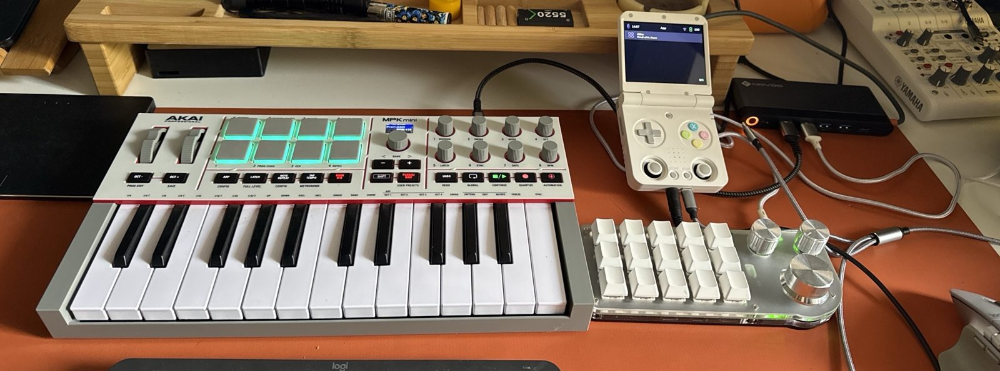
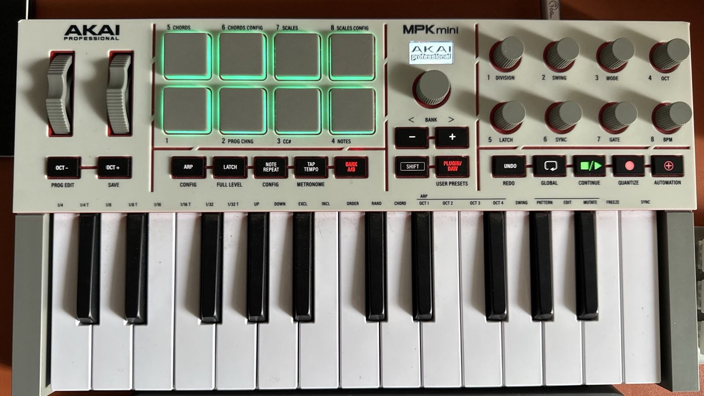
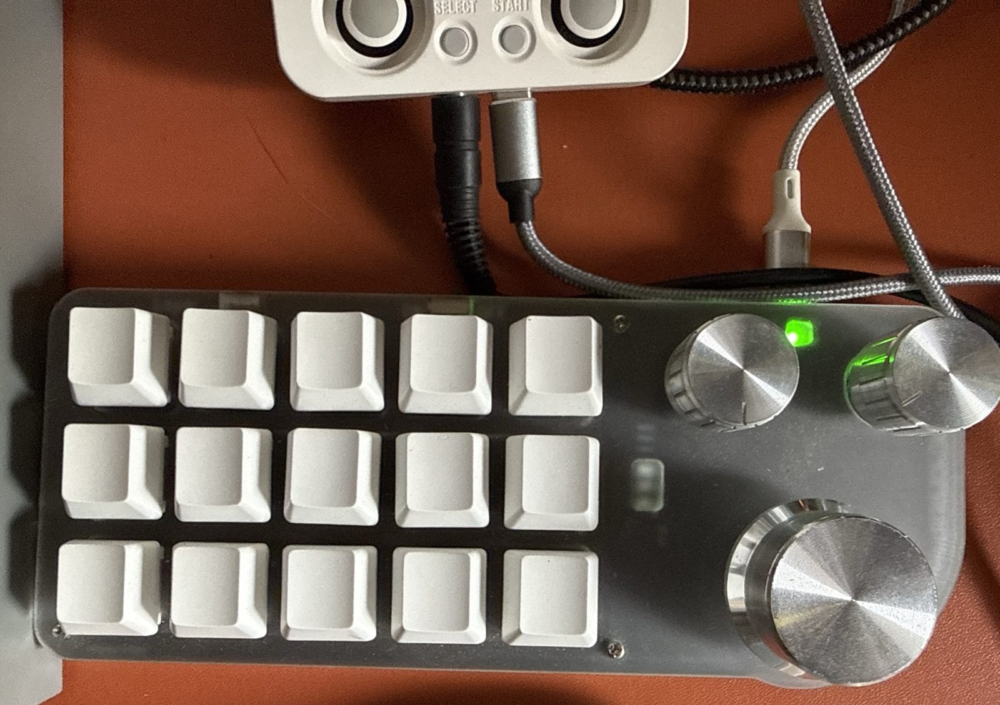
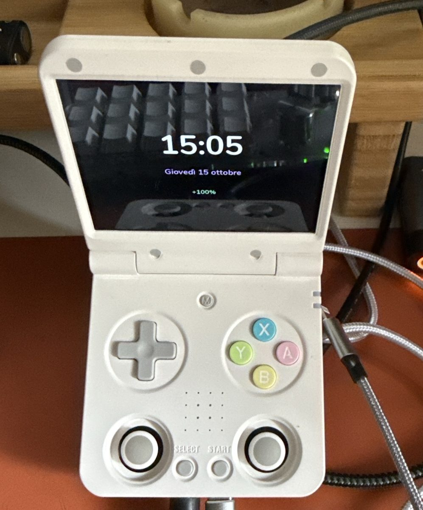

A faithful, open clone of the Orchid chord synth, grown on a handheld.
Hold a chord button, press one key, and a voiced chord with its bass comes out. Stame does what the Orchid does — strums, arpeggios, patterns, beats, a looper — on a Miyoo Flip, played with an Akai MPK mini IV and a fifteen-key macro pad. Then, with more keys and more power than the original, a little more.
Phase 1 · showcase 0.1 running on the Flip · phase 2: dedicated hardware · not affiliated with Telepathic Instruments
One finger, one chord. A whole band, if you keep going.
The Orchid by Telepathic Instruments is a small synth with eight chord buttons on the left and one octave of keys on the right. Hold Min and press F♯: you get an F♯ minor chord, voiced in a window you choose with a dial, with a bass note under it. Add an extension (6, m7, M7, 9), let a performance play it for you (strum, arpeggio, pattern, harp), start a beat, record a loop, overdub. It is an instrument for people who hear chords before they can name them.
Stame reproduces that behaviour: the chord logic, the Secret Chords, the voicing windows, Key mode and transpose, the bass, the performances, the beat and the looper, the MIDI. It is described in a functional specification written from the public manual and from observation, before the first line of code; it holds no factory data of the original. The core is plain C11 — no heap, no I/O — so the same engine can move to dedicated hardware in phase 2.
Where the Orchid has eight encoders and a 128×128 OLED, Stame has a keyboard, a macro pad and a 640×480 colour screen. The rule is simple: everything the Orchid does, Stame does, and that behaviour is never altered. Then, because there are more keys, more knobs and more CPU, it does a little more — a sampler, sampled drum kits, a knob Lock, a view key.
The name, the greenhouse, the botanist
In a flower the stamen makes the pollen and the pistil receives it. The Orchid's editor is called Pistil; Stame is the other half.
The rest of the identity comes from a greenhouse of the 1970s, the years of The Secret Life of Plants and of Mort Garson's Plantasia, Moog music «for plants and the people who love them». Stame is the synth that greenhouse would have had: a wooden console with a display that lights up like a slide under a microscope.
And from Linnaeus, who in 1735 classified plants by counting their stamens: one, Monandria; two, Diandria; three, Triandria. Stame keeps the rule: one note is one stamen. A triad is Triandria, a seventh chord Tetrandria, and the boot screen reads Stamen harmonicum, class Triandria. The chord name is set in dots, like a vacuum fluorescent display.
Three devices, one instrument.
Left hand on the pads, right hand on the keys, the macro pad a palm away, the Flip above it with the screen facing you.




A calm slide of fluorescent glass.
While you play, the screen shows four things: the chord, the tempo, the keyboard and the control you just touched. Everything else arrives when you ask for it.


Three synth models, a sampler, four drum kits, sixteen voices.
Two engines, Sound and Bass, share a pool of sixteen voices at 48 kHz, with two FX slots each, a delay and a reverb. Everything is 32-bit float C11 that also compiles for a Cortex-M7.
VA
Four band-limited oscillators, noise, a state-variable filter, four envelopes, four LFOs and an eight-slot modulation matrix.
FM
Four operators, eight algorithms, feedback on the fourth operator: bells, organs, plucks and the glassy stuff.
Reed Piano
A physical model of a 1960s reed electric piano: a tine with three modes, a non-linear pickup, clank, hammer and key-off noises, tremolo.
SMP, the sampler
A fourth model that plays a bank of CC0 samples: Kawai grand and upright pianos, a TX81Z FM piano, vibraphone, marimba, glockenspiel, chimes, harp, kalimba, harpsichord, pipe organ, recorder, tenor sax. Loops found and faded at build time, read with Hermite interpolation.
Twelve patterns, four kits
Funk, Bossa, Motorik, Lounge, Shuffle, Halftime, Boom Bap, Disco, Samba, Ballad, Train, Chip. Three kits of real samples (Studio, Jazz, 808) and the synthesized CR-78-style kit for the chiptune moments.
Strum, Slop, Arpeggiate, Pattern, Harp
The chord can be played for you: strummed over one or two octaves, loosened, arpeggiated, sequenced by one of the patterns, or cascaded like a harp. Lock keeps the performance when you change sound.
«Acacia», «Felce», «Pistillo», «Alga»
Leave it alone for twenty seconds and Stame plays four original pieces by itself, in turn: chords, bass, loop with overdubs, a drum loop played on the keys, sound changes, sampled piano, vibraphone, kalimba, sax, organ and bells, a ritardando. Every gesture shows on the panel as it happens.
Ninety-seven, and eighteen basses
Fifty-five synth sounds — Nightshade, Mandrake Stab, Dub Moss, Acid Nettle, Hogweed Hoover, Cypress Saw, Tar Drone, Glass Pollen, Night Greenhouse, Moonflower, Frost Pad, Fern Pluck, Copper Reed, Orbit Choir, Pollen Choir, Dew Mallet, Spore Bells, Lichen Organ, Sun Room, Nectar EP, Linnaeus Lead, Heliotrope, Petal Brass, Root Drone, Lotus Flute… — and forty-two sampled ones from a 94 MB CC0 bank: pianos, harpsichords, organ stops, recorders, ocarina, harmonicas, saxes, didgeridoo, harp, đàn tranh, psaltery, lamellophones, vibraphone, marimba, balafon, xylophone, glockenspiel, chimes, wine glasses. Designed for Stame, no preset of the original.
What works today, what is specified and not built yet.
Honest list. The showcase on the Flip is version 0.1: it plays, it loops, it has a demo; it is not the finished instrument.
Running on the Flip
- Chords from pads and keys, extensions, Secret Chords, Chord and Bass Voicing, Split / Octave, Key mode, transpose, Play Style
- The real synth: VA, FM, Reed Piano and the SMP sampler, 97 Stame sounds, 18 basses, FX and reverb
- Performances: Strum, Strum 2 Octaves, Slop, Arpeggiate (1 and 2 octaves), Pattern, Harp, with Lock
- Beat with fourteen patterns and sampled kits, Techno and Dub included, metronome in four metres, beat volume
- Looper: REC with a count-in, four bars, overdub, pause, undo, clear, synced with the transport
- Macro pad: twin grid T1–T8, Options, Back, Menu, Panic (held 1 s) and Reset (held 3 s), T13 Lock, T14 View, T15 Page
- MPK mini IV profile in the DAW preset: pads, keys, knobs, SHIFT as push, navigation knob, transport
- The panel: play page, controls page, six views, two themes, lists, platform menu, demo «Acacia»
Specified, not built yet
- Save / Save As / Delete of User Sounds; loading a private factory bank from the SD card
- Waiting Room and loop length (Free, 1–16 bars), ten loop slots, soft and hard exit
- Drums on the keys (Bass Voicing held + BPM) and the other Mod combinations
- MIDI out to the DIN port of the MPK, MIDI clock, external control
- Pocket Mode (playing with the Flip alone), Learn Pad, MPK status page
- The case: designed (birch, engraved black acrylic, PETG), not cut yet
- Phase 2: the same core on dedicated hardware (Teensy 4.1 + Audio Shield, probably)
Build on a PC, install over SSH.
You need a Miyoo Flip with a spruceOS-based firmware, an Akai MPK mini IV in its DAW preset, and, optionally, the fifteen-key macro pad on a plain USB 2.0 hub (no Power Delivery) on the Flip's top USB-C port.
The build runs in Git Bash on Windows with Zig as the C compiler (zig cc, cross-compiling for aarch64 glibc 2.27) and the SDL2 headers; the core compiles with no dependency at all. The tests and the portability checks must pass before every commit: the portability target compiles the core as freestanding Cortex-M7 code, to keep phase 2 honest.
sh tools/build.sh test # core unit tests on the PC
sh tools/build.sh portabilita # allowed headers, poisoned symbols, Cortex-M7 trial build
sh tools/build.sh render # offline renderer: PNG frames and WAV of the demo
python -I tools/campioni.py # downloads the CC0 samples and builds the bank (once)
sh tools/build.sh pacchetto # the app for the Flip in build/pacchetto/App/Stame
sh tools/deploy.sh # copies it over SSH (the Flip's address in tools/flip.ip)On the Flip, Stame appears under App › Musica. The sample bank is built on the PC from tools/campioni.py (it needs numpy and soundfile) and shipped next to the binary; without it the sampled sounds and kits stay silent, everything else plays.
Playing it, in three lines
Hold a pad, press a key. Top row Dim, Min, Maj, Sus; bottom row the extensions 6, m7, M7, 9. The key gives the root; the big knob of the pad moves the voicing window.
Turn a knob, the band answers. K1 Sound, K2 Perform, K3 FX, K4 Key, K5 Bass, K6 Loop, K7 BPM, K8 Volume; press the twin key on the pad to «push» it. T13 locks the pad's three knobs onto Sound, Perform and Key, with their clicks.
REC, play four bars, ⊕ to overdub. The transport buttons of the MPK are the looper; STOP/PLAY starts the beat. T12 held for a second is Panic, three seconds is Reset.
The Italian manual and the one-page quick reference have all of it.
Specification first, then code.
The functional specification
Seven sections: overview, chords and performance, sound, interface, MIDI and controls, the Flip platform, the case. Every requirement has an ID and a source tag: [M] manual, [O] observed, [D] deduced, [V] to verify on a real unit. Open questions are listed, not hidden.
Manual and quick reference
How to play the showcase on the Flip: the rig, chords, every control and its gestures, the looper step by step, beats, the macro pad with Lock / View / Page, the Flip's pages and menu, what to do when something is red.
The identity
The story, the mark, the two themes, the dot-matrix font drawn for Stame, the seven-segment digits, the botanical plate, the sound logo of the boot. The same language on the screen and on the case.
The case
A birch plywood console with an engraved black acrylic mask over the MPK, a tower on the right for the pad and the Flip, a PETG cradle holding the screen at 65°. Generated from a table of measurements: SVG for the laser, STL for the printer.
Open, and careful about what is not ours.
| What | Licence | Where |
|---|---|---|
| Stame: code, specification, identity, case | MIT, © 2026 Luigi Massari | LICENSE |
| Sample bank: pianos, mallets, harp, organ, winds, drums | CC0 1.0: Versilian Community Sample Library (VCSL) and the Sonic Pi sample set (freesound.org) | assets/campioni/FONTI.md |
| Spleen bitmap font | BSD 2-Clause, Frederic Cambus | third_party/spleen |
| Matrice dot font, mark, sounds, beats, «Acacia» | Made for Stame, MIT with the rest | src/gfx, tools/matrice.py, tools/patch.py, tools/demo.py |
Stame is an independent project, not affiliated with or endorsed by Telepathic Instruments. «Orchid» and «Pistil» are their names. The repository contains no factory data of the original: no presets, no firmware, no sample of its sounds. Its behaviour is described from the public manual and from listening, and every requirement says where it comes from. If you own an Orchid, the open questions marked [V] in the specification are the ones only you can answer.